Durch Anklicken einer beliebigen Buchungszeile in der Vorschau gelangen Sie in den Regelassistenten für den Zahlungsausgleich, um die Konten- und/oder Fakturen-Selektion durchzuführen.
Allgemeines
Ø Selektierter Buchungstext:
Der gesamte selektierte Buchungstext der Buchungszeile aus der Bankdatei wird Ihnen hier vorgeschlagen.
Sie können folgende Auswahl treffen:
ü Eine Bezeichnung, die direkt mit
einer Kontonummer in Bezug gebracht werden kann.
D. h. aufgrund des
Buchungstextes (z. B. VISA) kann direkt ein Konto zugeordnet werden. Mit dieser
Auswahl erhalten Sie im Schritt zwei ein Eingabefeld für die Kontonummer.
ü Eine Konten- und/oder
Fakturennummer
Suche nach einer Konten- und/oder Fakturennummer im
Buchungstext.
ü Eine BLZ/Kontonummer, die einem
Personenkonto zugeordnet werden kann.
Diese Auswahl ist nur aktiv, wenn im
Datensatz der Bankdatei die Bankverbindung enthalten ist. Aufgrund der
Bankverbindung kann ein Personenkonto ausgewählt werden.
ü Offene Posten Informationen (das gestapelte Regelwerk soll angewendet werden)
ü Mehrere Beträge. Es soll eine Splitbuchung erzeugt werden (z.B. Kreditkartenabrechnungen incl. Disagio / Gebühr)
Ø Pfeiltasten
In einigen Fenstern des Assistenten können Sie mit Pfeiltasten die Buchungstexte bearbeiten.
ü  Damit kann der erste Datensatz angesprochen
werden (Tastatur: STRG SHIFT POS1).
Damit kann der erste Datensatz angesprochen
werden (Tastatur: STRG SHIFT POS1).
ü Damit kann der vorherige Datensatz angesprochen werden (Tastatur: SHIFT -).
ü  Damit kann der nächste Datensatz
angesprochen werden (Tastatur: SHIFT +).
Damit kann der nächste Datensatz
angesprochen werden (Tastatur: SHIFT +).
ü  Damit kann der letzte Datensatz
angesprochen werden (Tastatur: STRG SHIFT ENDE).
Damit kann der letzte Datensatz
angesprochen werden (Tastatur: STRG SHIFT ENDE).
Buttons
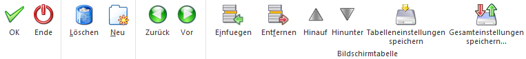
Ø OK
Mit dem OK-Button wird die Regel gespeichert.
Ø Ende
Mit dem Ende-Button wird der Regelassistent abgebrochen.
Ø Löschen
Über den Löschen-Button können bestehende Regeln gelöscht werden.
Ø Neu
Über den Neu-Button kann eine neue Regel angelegt werden.
Ø Zurück
Mit dem Zurück-Button kann im Regelassistenten ein Schritt zurückgegangen werden.
Ø Vor
Über den Vor-Button gelangen Sie in den nächsten Schritt des Regelassistenten.
Ø Einfügen
Es können neue Regelzeilen eingetragen werden.
Ø Entfernen
Angewählte bestehende Zeilen werden wieder gelöscht.
Ø Hinauf/ Hinunter
Mit diesen beiden Buttons können sie die vorhandenen Zeilen vertikal verschieben und somit ihre Reihenfolge ändern.
Ø Tabelleneinstellungen speichern
Die Spalten einer Tabelle können grundsätzlich an beliebige Positionen verschoben, bzw. in der Breite entsprechend angepasst werden. Durch Anwahl des Buttons "Tabelleneinstellungen speichern" werden die Einstellungen benutzerspezifisch gespeichert und bei dem nächsten Aufruf des Programmpunktes wieder vorgeschlagen.
Ø Gesamteinstellungen speichern
Im Gegensatz zu "Tabelleneinstellungen speichern" können mit "Gesamteinstellungen speichern" mehrere Tabellenaufbauten gespeichert und nach Wunsch geladen werden. Zusätzlich werden Sonderfunktionen der Tabelle (z.B. "Spalte gruppieren") ebenfalls bei der Speicherung bedacht.
Regel: Eine Bezeichnung, die direkt mit einer Kontonummer in Bezug gebracht werden kann.
Schritt 1
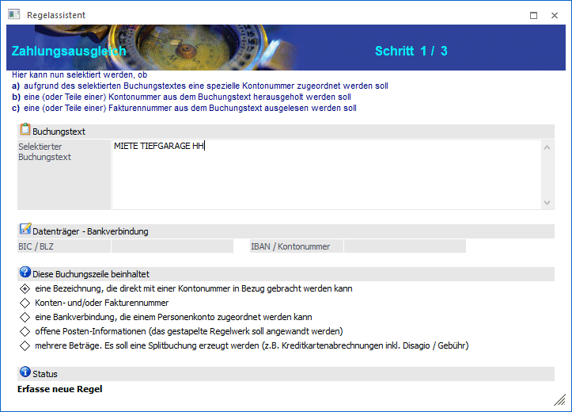
Schritt 2
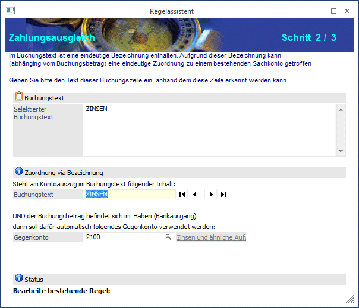
Ø Buchungstext
Der Text aus dem selektierten Buchungstext, der mit dem Konto in Bezug gebracht werden soll, wird hier eingegeben oder über die Pfeiltasten bearbeitet. Wie Sie mit den Pfeiltasten arbeiten, ist weiter oben unter "Allgemeines" beschrieben.
Ø Gegenkonto
Eingabe eines Sachkontos oder Personenkontos. Das Konto kann auch über per Matchcode mit F9 oder der Lupe gesucht werden.
Schritt 3
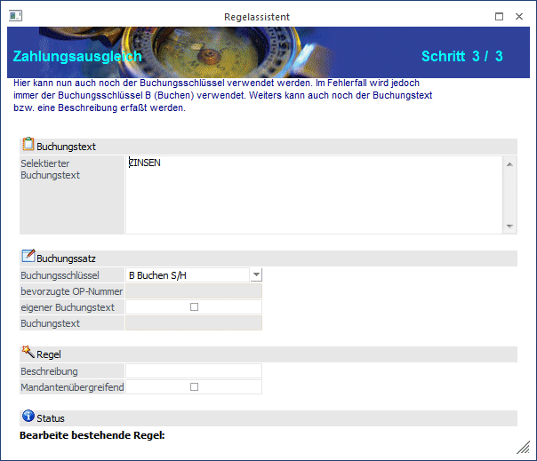
Ø Buchungsschlüssel
Auswahl der Buchungsart aus der Combobox
Im Fehlerfall wird jedoch immer der Buchungsschlüssel B verwendet.
Ø Bevorzugte OP-Nummer
Eine bevorzugte OP-Nummer kann nur bei dem Buchungsschlüssel DZ-Debitorenzahlung oder KZ-Kreditorenzahlung eingetragen werden.
Wird in der Regel keine Maskierung für die Fakturennummer angegeben, kann hier eine OP-Nummer eingetragen werden, die dann in den ZAGL-Buchungsstapel übernommen wird.
Ø Eigener Buchungstext
Wird diese Checkbox angehakt, kann ein Buchungstext erfasst werden, der in den ZAGL-Buchungsstapel übernommen wird.
Ø Buchungstext
Eingabe des Buchungstextes.
Hier steht die Möglichkeit zur Verfügung, den Buchungstext mit der Kontenbezeichnung vorzubelegen. Dazu muss der Platzhalter #NAMSOLL bzw. #NAMHABEN als Vorbelegung des Buchungstextes (bzw. eines Teiles davon) hier eingetragen werden.
Ø Beschreibung
Eingabe einer Beschreibung der Regel, die auch im Regelwerk mit angezeigt wird.
Ø Mandantenübergreifend
Entscheidung, ob die Regel mandantenübergreifend oder mandantenspezifisch ist. Die mandantenübergreifenden Regeln haben Vorrang bei der Suche nach der zutreffenden Regel für einen Buchungssatz und stehen im Regelwerk immer vor den mandantenspezifischen Regeln.
Die letzte Einstellung dieser Checkbox wird pro Benutzer gemerkt und bei der Anlage einer neuen Regel vorgeschlagen.
Regel: Konten- und/oder Fakturennummer
Schritt 1
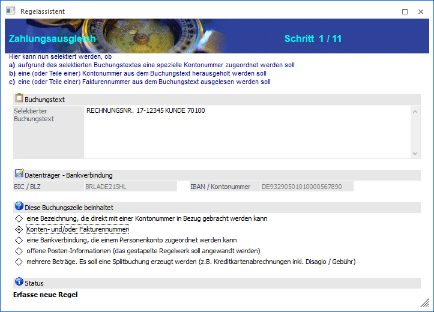
Schritt 2
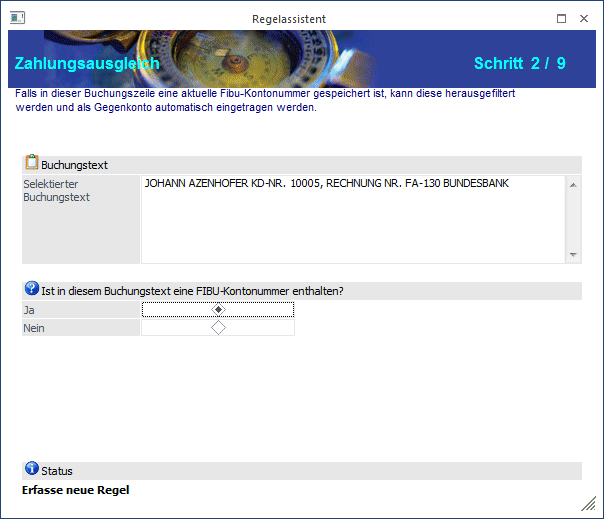
Hier treffen Sie die Auswahl, ob im Buchungstext eine FIBU-Kontennummer enthalten ist oder nicht.
Ø Ja
Die weiteren Abfragen im Assistenten beziehen sich auf die Kontonummer und die Fakturennummer.
Ø Nein
Die weiteren Abfragen im Assistenten beziehen sich nur auf die Fakturennummern.
Schritt 3
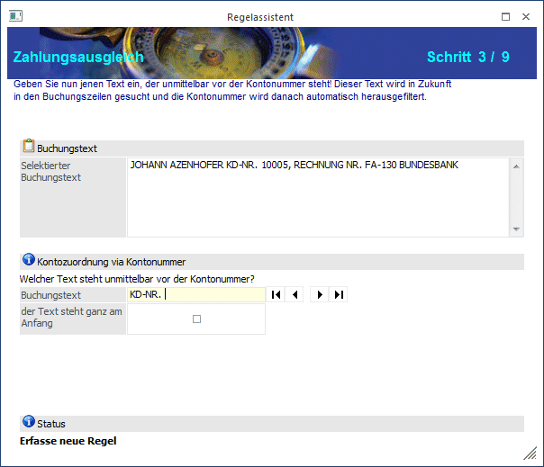
Es muss keine exakte Reihenfolge der Kundennummer und Fakturennummer in den selektierten Buchungstexten vorhanden sein. Um aus dem selektierten Buchungstext die Kontonummer herauszufiltern, ist der vor der Kontonummer stehende Text herauszufiltern.
Ø Buchungstext
Eingabe des Textes aus dem selektierten Buchungstext, der unmittelbar vor der Kontonummer steht. Wie Sie mit den Pfeiltasten arbeiten, ist weiter oben unter "Allgemeines" beschrieben.
Ø Der Text steht ganz am Anfang
Falls die Kontonummer gleich am Anfang des selektierten Buchungstextes steht, aktivieren Sie die Checkbox.
Schritt 4
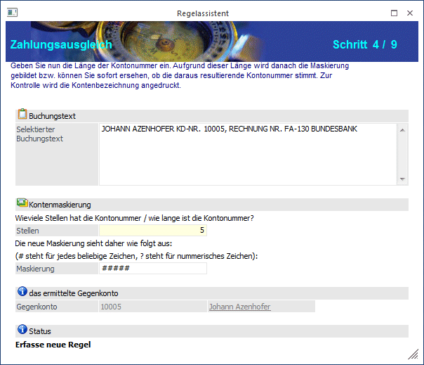
Ø Stellen
Die Länge der Kontonummer ist einzutragen.
Ø Maskierung
Hier kann eine Maskierung eingegeben werden, aus der die Kontonummer gebildet wird. Für Platzhalter (für Zeichen, die nicht zur Kontonummer gehören) wird das ~ - Zeichen verwendet, für jedes beliebige Zeichen der Kontonummer wird das # - Zeichen verwendet, für numerische Zeichen steht das ?.
Das ermittelte Gegenkonto wird Ihnen angezeigt.
Schritt 5
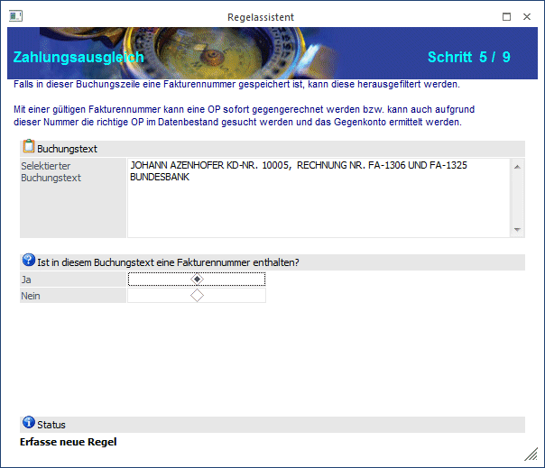
Hier treffen Sie die Auswahl, ob im Buchungstext eine Fakturennummer enthalten ist.
Ø Ja
In den weiteren Schritten wird die Selektion nach der Fakturennummer im Buchungstext durchgeführt.
Ø Nein
Im nächsten Schritt kann der Buchungsschlüssel ausgewählt werden
Schritt 6
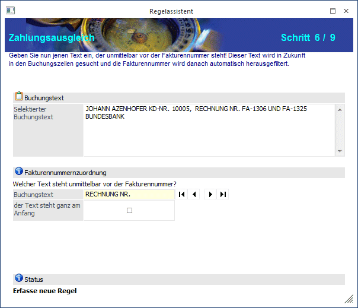
Ø Buchungstext
Eingabe des Textes aus dem selektierten Buchungstext, der unmittelbar vor der Fakturennummer steht. Wie Sie mit den Pfeiltasten arbeiten, ist weiter oben unter "Allgemeines" beschrieben.
Ø Der Text steht ganz am Anfang
Falls die Fakturennummer gleich am Anfang des selektierten Buchungstextes steht, aktivieren Sie die Checkbox.
Schritt 7
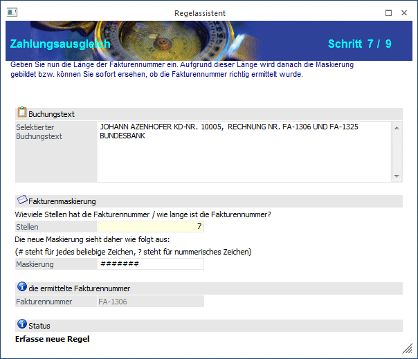
Ø Stellen
Die Länge der Fakturennummer ist einzutragen.
Ø Maskierung
Hier kann eine Maskierung eingegeben werden, aus der die Fakturennummer gebildet wird. Für Platzhalter (für Zeichen, die nicht zur Fakturennummer gehören) wird das ~ - Zeichen verwendet, für jedes beliebige Zeichen der Fakturennummer wird das # - Zeichen verwendet, für numerische Zeichen steht das ?.
Die ermittelte Fakturennummer wird Ihnen angezeigt.
Schritt 8
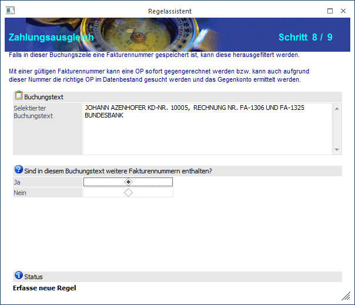
Hier treffen Sie die Auswahl, ob im Buchungstext weitere Fakturennummern enthalten sind.
Ø Ja
In den weiteren Schritten wird die Selektion nach der weiteren Fakturennummer im Buchungstext durchgeführt.
Ø Nein
Im nächsten Schritt kann der Buchungsschlüssel ausgewählt werden.
Hinweis
Sollten mehrere Fakturennummern im Buchungstext enthalten sein, und sie diese Frage mit "JA" beantworten, wird der Regelassistent automatisch um drei Schritte erweitert. Es ändert sich daher in diesem Fall die zur Verfügung stehenden Schritte von 8/9 auf 8/11.
Schritt 9
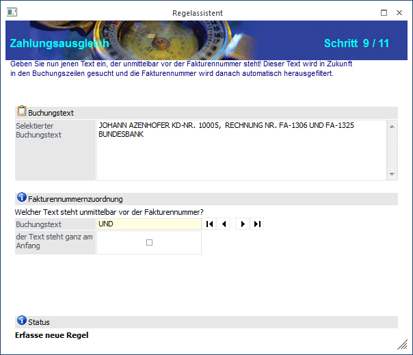
Ø Buchungstext
Eingabe des Textes aus dem selektierten Buchungstext, der unmittelbar vor der weiteren Fakturennummer steht. Wie Sie mit den Pfeiltasten arbeiten, ist weiter oben unter "Allgemeines" beschrieben.
Ø Der Text steht ganz am Anfang
Falls die Fakturennummer gleich am Anfang des selektierten Buchungstextes steht, aktivieren Sie die Checkbox.
Schritt 10
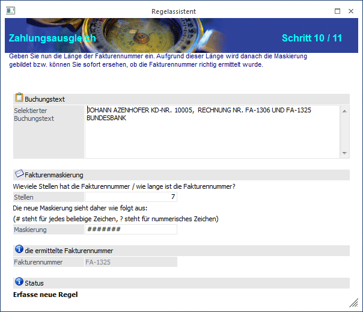
Ø Stellen
Die Länge der Fakturennummer ist einzutragen.
Ø Maskierung
Hier kann eine Maskierung eingegeben werden, aus der die Fakturennummer gebildet wird. Für Platzhalter (für Zeichen, die nicht zur Fakturennummer gehören) wird das ~ - Zeichen verwendet, für jedes beliebige Zeichen der Fakturennummer wird das # - Zeichen verwendet, für numerische Zeichen steht das ?.
Die ermittelte Fakturennummer wird Ihnen angezeigt.
Schritt 11
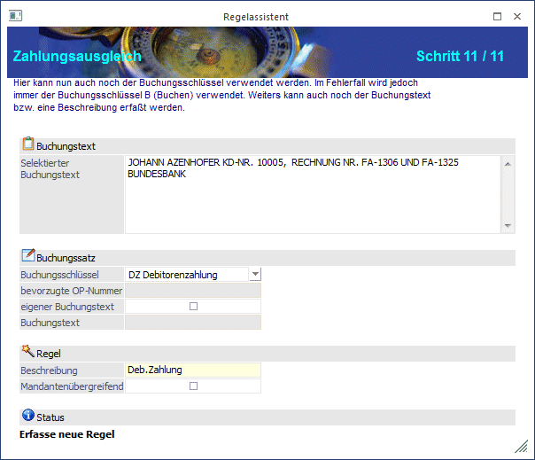
Ø Buchungsschlüssel
Auswahl der Buchungsart aus der Combobox
Im Fehlerfall wird jedoch immer der Buchungsschlüssel B verwendet.
Ø Bevorzugte OP-Nummer
Eine bevorzugte OP-Nummer kann nur bei dem Buchungsschlüssel DZ-Debitorenzahlung oder KZ-Kreditorenzahlung eingetragen werden.
Wird in der Regel keine Maskierung für die Fakturennummer angegeben, kann hier eine OP-Nummer eingetragen werden, die dann in den ZAGL-Buchungsstapel übernommen wird.
Ø Eigener Buchungstext
Wird diese Checkbox angehakt, kann ein Buchungstext erfasst werden, der in den ZAGL-Buchungsstapel übernommen wird.
Ø Buchungstext
Eingabe des Buchungstextes.
Hier steht die Möglichkeit zur Verfügung, den Buchungstext mit der Kontenbezeichnung vorzubelegen. Dazu muss der Platzhalter #NAMSOLL bzw. #NAMHABEN als Vorbelegung des Buchungstextes (bzw. eines Teiles davon) hier eingetragen werden.
Ø Beschreibung
Eingabe einer Beschreibung der Regel, die auch im Regelwerk mit angezeigt wird.
Ø Mandantenübergreifend
Entscheidung, ob die Regel mandantenübergreifend oder mandantenspezifisch ist. Die mandantenübergreifenden Regeln haben Vorrang bei der Suche nach der zutreffenden Regel für einen Buchungssatz und stehen im Regelwerk immer vor den mandantenspezifischen Regeln.
Die letzte Einstellung dieser Checkbox wird pro Benutzer gemerkt und bei der Anlage einer neuen Regel vorgeschlagen.
Hinweis 1
Ist in der importierten MT940-Datei nur eine Fakturennummer vorhanden kann eine Zuordnung des Buchungsschlüssels DZ (Debitorenzahlung) ohne Hinterlegung einer Kontonummer erfolgen. Das Programm sucht sich automatisch aufgrund der Rechnungsnummer das Debitorenkonto, auf dem die dazugehörige DF (Debitorenfaktura) gebucht wurde und hinterlegt diese Kontonummer automatisch.
Hinweis 2
Bei der Maskierung der Konten- und Fakturennummer können "?" als Platzhalter für numerische Zeichen hinterlegt werden.
Regel: Eine Bankverbindung, die einem Personenkonto zugeordnet werden kann.
Schritt 1
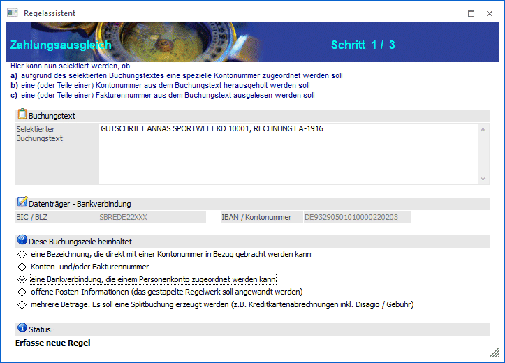
Schritt 2
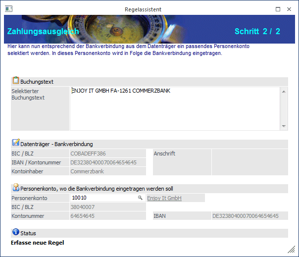
Ø Personenkonto
Eingabe der Personenkontonummer oder Auswahl des Kontos über den Matchcode mit F9 oder der Lupe.
Nach Eingabe der Kontonummer wird die Bankverbindung aus dem Personenkontenstamm angezeigt.
Ist die Standard-Bankverbindung des Personenkontos abweichend von der Bankverbindung aus der Bankdatei, kommt eine Abfrage, ob die Bankverbindung im Personenkontenstamm in die weiteren Bankverbindungen übernommen werden soll. Existiert im Personenkonto noch gar keine Bankverbindung, dann wird die Bankverbindung aus der Bankdatei als Standard-Bankverbindung in das Personenkonto übernommen.
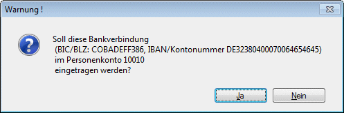
Hinweis
Für diese Regel wird keine Zeile im Regelwerk angelegt.
Wenn aufgrund dieser Regel das Personenkonto gefunden wurde, kann anschließend auch noch die Regel "Konten- und/oder Fakturennummer" gewählt werden, um die Fakturennummer auszulesen.
Regel: Offene Posten Informationen (das gestapelte Regelwerk soll angewendet werden)
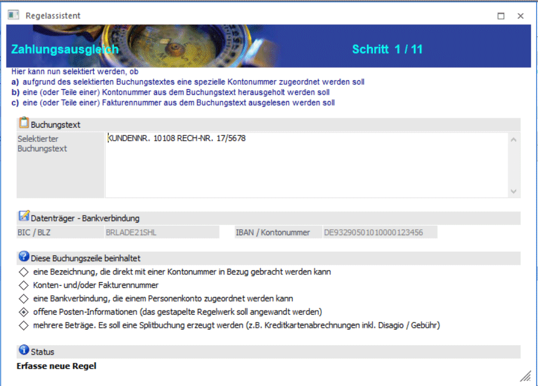
Die Stapelregel ist in mehrere Register aufteilt, die sich immer nur auf einen Teil der Buchungszeile (z.B. die Kundennummern-Suche, die OP-Nummern-Suche usw.) beziehen. In jedem einzelnen Register werden die unterschiedlichen Feldinhalte / Maskierungen in einer Tabelle hinterlegt. Der Tabelleninhalt baut sich nach und nach mit jeder neuen Stapelregel auf.
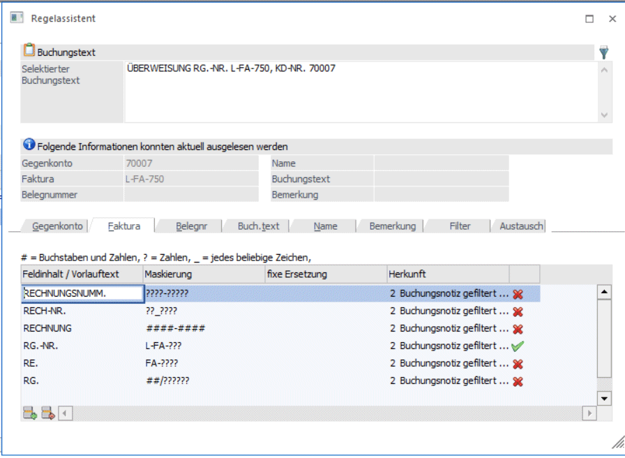
Buchungstext
Als "Selektierter Buchungstext" wird die Buchungsnotiz aus der ZAGL-Vorschau eingetragen. Das ist die Information, die aus der MT940-Datei ausgelesen werden kann.
Aus dem "Selektierten Buchungstext" kann Text kopiert werden, um ihn in dem Feldinhalt / Vorlauftext der Stapelregeln (Tabelle) einzufügen.
Filter
Wird der Filter-Button gedrückt, wird der Buchungstext um die Information (z. B. Gegenkonto, Faktura), für die bereits eine Stapelregel greift, reduziert. Bei erneutem Drücken des Filter-Buttons wird wieder der komplette Buchungstext angezeigt.
Folgende Informationen konnten aktuell ausgelesen werden
Dieser Info-Bereich zeigt auf, welche Daten über die Stapelregel gefunden wurden.
Bei neu angelegten Stapelregeln wird die Information erst gefüllt, wenn die Stapelregel mit OK gespeichert wird.
Register und Tabelle mit den Stapelregeln
Die Stapelregeln werden für die jeweiligen Bereiche, z.B. Gegenkonto, Faktura usw. in dem entsprechenden Register einer Tabelle erfasst. Jede Regel wirkt immer nur auf einen Teil der Buchungszeile (z.B. zur Kundennummern-Suche, zur OP-Nummern-Suche usw.)
Folgende Register stehen für die Stapelregeln zur Verfügung:
ü Gegenkonto
ü Faktura
ü Belegnummer
ü Buchungstext
ü Name
ü Bemerkung
ü Filter
ü Austausch
Beim Öffnen des Regelassistenten der Stapelregel durch einen Doppelklick auf die Buchungszeile in der ZAGL-Vorschau stellt sich das Programm in das Register, welches noch maskiert werden könnte. Wurde z.B. bereits das Gegenkonto ermittelt dann stellt sich das Programm in das Register Faktura.
Ø Feldinhalt / Vorlauftext
Hier wird der Text eingetragen, der unmittelbar vor dem gesuchten Wert (z.B. Gegenkonto, Faktura) steht. Nach exakt diesem Text wird in dem Herkunftsfeld gesucht.
Beispiele für das Register Faktura:
KUNDEN-NR.
KD.NR.
KDNR
KD
Ø Maskierung
Unmittelbar nach dem Feldinhalt muss die Maskierung eingetragen werden, aus welcher der gesuchte Wert (z.B. Gegenkonto, Faktura) gebildet wird. Die Maskierung muss exakt dem gesuchten Wert entsprechen, damit die Regel greifen kann.
Für die Maskierung gelten folgende Zeichen:
# = Buchstaben und Zahlen
? = Zahlen
_ = jedes beliebige Zeichen (z.B. Schrägstrich, Bindestrich, ausgenommen unten aufgeführte Whitespaces)
Das Programm filtert etwaige Whitespaces automatisch heraus, die unmittelbar nach dem Feldinhalt / Vorlauftext stehen. Whitespaces sind: <LEERZEICHEN>.:;<ZEILENSCHALTUNG><TAB>?#@
Hinweis
Je detaillierter die Maskierung eingetragen wird, umso sicherer kann eine Stapelregel greifen.
Beispiel für die Maskierung der Fakturennummer FA17-1234:
FA17-???? ist am detailliertesten
FA??-????
##??-????
####-????
####-####
####_####
Ø Fixe Maskierung
Die fixe Maskierung oberhalb der Tabelle steht für Gegenkonto und Faktura nur dann zur Verfügung, wenn in der Spalte Maskierung in allen Zeilen derselbe Wert steht.
Ø Fixe Ersetzung
Wenn das maskierte Feld nicht verwendet werden soll sondern ein fixer Wert genommen werden soll, wird in diese Spalte der Wert eingetragen, der in die ZAGL-Vorschau übernommen werden soll.
Ø Herkunft
In einer Datei können unterschiedlichste Informationen gespeichert sein. Das kann der Buchungstext sein, es kann aber auch z.B. der Bankkonten-Inhaber in der Datei namentlich übergeben werden. Hier kann nun eingestellt werden, welches Feld bei der Regel geprüft werden soll.
Voreingestellt ist "2 Buchungsnotiz gefiltert (Sonderzeichen)". Bei dieser Herkunft werden die in den Einstellungen unter "Sonderzeichenfilter" hinterlegten Sonderzeichen herausgefiltert. Zusätzlich werden die im Register Filter hinterlegten Zeilen berücksichtigt.
Als Herkunft stehen zur Auswahl
ü 1 Buchungsnotiz
ü 2 Buchungsnotiz gefiltert (Sonderzeichen)
ü 3 Kundendaten
ü 4 Inhaber
ü 5 Eingabefeld Belegnummer
ü 6 Eingabefeld Buchungstext
Ø
In dieser Spalte ist ersichtlich, ob eine Regel für die Buchungszeile gegriffen hat. Wird der angezeigt, wird diese Regel für die Buchungszeile verwendet.
Register Buchungstext
In den Stapelregeln - Regel "offene Posten-Informationen (das gestapelte Regelwerk soll angewendet werden)" - können für den Buchungstext Platzhalter hinterlegt werden. Folgende Platzhalter stehen zur Verfügung:
#NAMSOLL / #NAMHABEN - Kontoname vom Soll-/Habenkonto
#NUMSOLL / #NUMHABEN - Kontonummer vom Soll-/Habenkonto
#NAMPERS / #NUMPERS - Kontoname / Kontonummer vom beteiligten Personenkonto
#NUMFAKT - Fakturennummer von der jeweiligen Buchungszeile
#NUMBEL - Belegnummer von der jeweiligen Buchungszeile
Die Platzhalter werden in der Stapelregel im Register "Buchungstext" eingetragen:
"Feldinhalt/Vorlauftext" = *
"fixe Ersetzung" = Platzhalter
Die Platzhalter, die in der Stapelregel eingetragen sind, finden auch Berücksichtigung bei Buchungszeilen für Sachkontenbuchungen, welche die Regel "Eine Bezeichnung, die direkt mit einer Kontonummer in Bezug gebracht werden kann, ohne eigenen Buchungstext" hinterlegt haben.
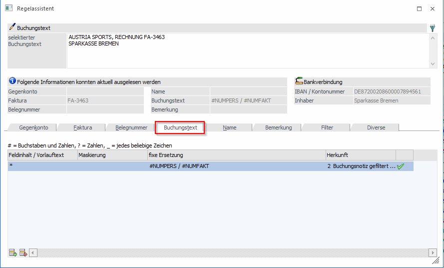
Register Filter
Aus der Buchungsnotiz können Felder herausgefiltert werden, die das Regelwerk nicht benötigt (z.B. Text den die Bank mitliefert wie "Überweisung", Vorlaufwörter wie "Firma:" oder auch Datumsinformationen) und die bei der Suche nicht relevant sind. Der Filter greift nur bei der Herkunft "2 Buchungsnotiz gefiltert".
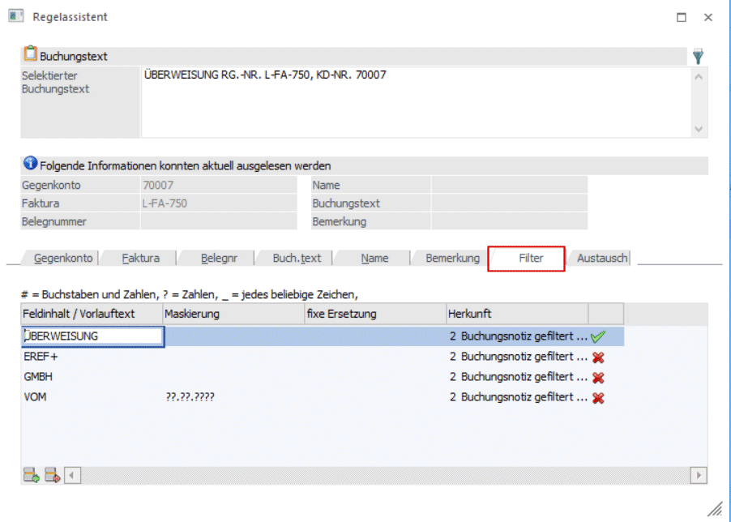
Hinweis:
Stapelregeln, die per Doppelklick auf eine Vorschau-Zeile erzeugt werden und der Regelassistent mit OK gespeichert wird, werden nur auf diese Zeile angewendet. Es wird dadurch nicht die Tabelle in der Vorschau neu aufgebaut.
Erst durch einen Klick auf das Register Vorschau wird die Tabelle neu aufgebaut und das Regelwerk wird für jede Zeile angewendet.
Buttons
Einfügen
Über den Einfügen-Button oder einen Klick in die nächste freie Zeile kann in der Tabelle eine neue Regel / Zeile erfasst werden.
Entfernen
Über den Entfernen-Button werden einzelne Zeilen / Regeln entfernt.
Information, welche Regel gegriffen hat
In den einzelnen Registern wird über den "grünen Haken" angezeigt, welche Regel für die ausgewählte Buchungszeile (Doppelklick in der Vorschau auf die Buchungszeile) gegriffen hat.
Wird eine neue Regel eingefügt, muss der Regelassistent erst mit OK gespeichert werden, damit die Info, welche Regel gegriffen hat, sichtbar ist.
Regel: "Mehrere Beträge. Es soll eine Splitbuchung erzeugt werden (z.B. Kreditkartenabrechnungen incl. Disagio / Gebühr)"
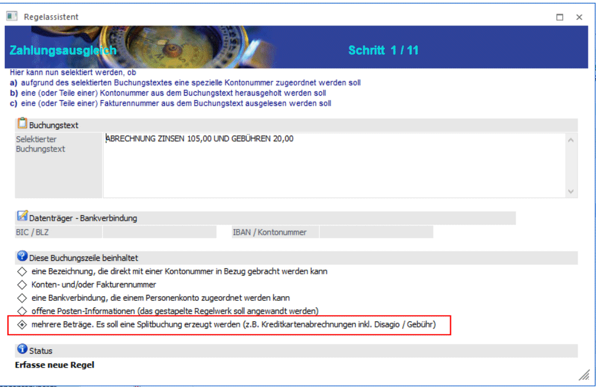
Über die Splitregel kann eine Bank-Buchungszeile in eine Splitbuchungszeile verwandelt werden, sofern in der Buchungszeile (im Buchungstext) mehrere Beträge enthalten sind.
In dieser Regel muss definiert werden, woran solch eine Buchungszeile erkannt werden kann.
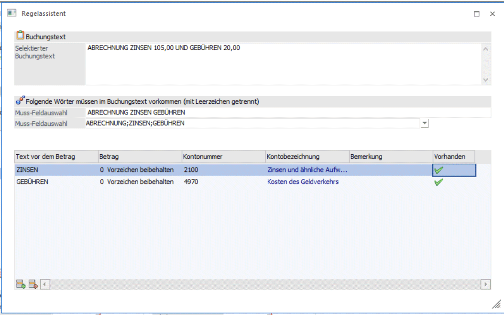
Ø Muss-Feldauswahl
In der oberen Zeile "Muss-Feldauswahl" werden alle Texte mit Leerzeichen voneinander getrennt eingetragen, die charakteristisch für diese Splitbuchung sind. Je mehr Texte eingetragen werden, umso differenzierter können unterschiedliche Splitregeln angelegt werden. Aus dem "Selektierten Buchungstext" kann Text kopiert werden, um ihn in der Muss-Feldauswahl einzufügen.
In der unteren Zeile "Muss-Feldauswahl" stehen die in der Vorzeile eingetragenen Texte zur Auswahl. Diese Auswahl dient der Kontrolle. Nur Texte, die auch tatsächlich in dem Buchungstext enthalten sind, werden hier zur Auswahl vorgeschlagen. Somit unbedingt auf korrekte Schreibweise achten.
Ø Text vor dem Betrag
In der Tabelle wird der Text eingetragen, der im Buchungstext unmittelbar vor dem Betrag steht. Der Betrag selbst wird dann automatisch in die ZAGL-Vorschau übernommen.
Ø Betrag
In diesem Feld wird entschieden, wie der Betrag in der Splitzeile dargestellt werden soll. Zur Auswahl stehen:
ü 0 Vorzeichen beibehalten
ü 1 Vorzeichen umkehren
ü 2 Restbetrag
Für die Übernahme des Restbetrags kann als "Text vor dem Betrag" auch ein "*" eingetragen werden.
Wenn ein Restbetrag übrig bleibt, verwendet das Programm automatisch das Zeichen "!" anstelle der Kontonummer. Der ZAGL-Buchungsstapel kann dann nicht verbucht werden.
Ø Kontonummer
Eintrag der Kontonummer oder Auswahl über den Matchcode.
Wird keine Kontonummer eingetragen, verwendet das Programm automatisch das Zeichen "!" anstelle der Kontonummer. Der ZAGL-Buchungsstapel kann dann nicht verbucht werden.
Ø Kontobezeichnung
Hier wird automatisch die Bezeichnung aus dem Kontenstamm übernommen.
Ø Bemerkung
In diesem Feld kann eine Bemerkung für die Splitzeile eingetragen werden.
Ø Vorhanden
Sobald eine Tabellenzeile greift, d.h. die Zeile als Splitzeile in die ZAGL-Vorschau übernommen werden kann, wird dies mit einem "grünen Haken" dargestellt.
Hinweis:
Splitregeln, die per Doppelklick auf eine Vorschau-Zeile erzeugt werden und der Regelassistent mit OK gespeichert wird, werden nur auf diese Zeile angewendet. Es wird dadurch nicht die Tabelle in der Vorschau neu aufgebaut.
Erst durch einen Klick auf das Register Vorschau wird die Tabelle neu aufgebaut und das Regelwerk wird für jede Zeile angewendet.
Buttons
Ø Einfügen
Über den Einfügen-Button oder einen Klick in die nächste freie Zeile kann in der Tabelle eine neue Zeile erfasst werden.
Ø Entfernen
Über den Entfernen-Button werden einzelne Zeilen entfernt.